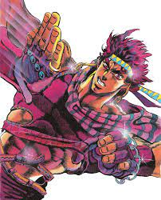

A clever and charismatic ripple master, whose adventurous spirit and indomitable will shaped the destiny of generations.

Joseph Joestar in Jojo's Bizarre Adventure: Battle Tendency
Timeline of Joseph Joestar's Life
1920: Joseph Joestar is born on September 27th, 1920 in England. He is the grandson of Jonathan Joestar, the protagonist of Part 1.
1938: At the age of 18, Joseph is living in New York City and known for his rebellious and troublemaking nature. He gets into street fights and becomes known as a delinquent.
1938-1939: During his time in New York City, Joseph encounters Robert E. O. Speedwagon, who becomes his friend and mentor. Speedwagon introduces Joseph to the world of Hamon (also known as Ripple), a martial art that utilizes the power of the sun to defeat the supernatural creatures known as vampires.
1939: Joseph learns about the existence of his family's long-standing enemy, the Pillar Men, ancient and powerful beings who seek to take over the world. He meets Caesar Zeppeli, the grandson of William A. Zeppeli, who becomes his Hamon training partner and eventual friend.
1939-1940: Joseph's journey to stop the Pillar Men and save humanity takes him to Rome, Italy. There, he faces powerful adversaries and undergoes intense training to master Hamon.
1940: Joseph confronts the Pillar Men, particularly Santana, Wamuu, Esidisi, and Kars. He successfully defeats Santana and later battles Wamuu and Esidisi in intense one-on-one confrontations.
1940: Joseph's rivalry with Wamuu turns into mutual respect, and Wamuu saves Joseph's life by giving him a wedding ring before dying. Joseph uses Wamuu's wind powers to save his friends.
1940: In the final battle, Joseph faces Kars, the leader of the Pillar Men. During the confrontation, Joseph manages to send Kars into space, but Kars transforms into an ultimate being with the power of light. Joseph uses a desperate tactic to defeat Kars and manages to send him into space forever, sacrificing his own hand in the process.
1940-1950s: After defeating the Pillar Men, Joseph returns to his home in New York City and eventually marries a woman named Suzi Q. They have a daughter named Holly Joestar.
1987: Holly Joestar becomes seriously ill due to a Stand-related issue. Joseph travels to Japan to meet his grandson, Jotaro Kujo, who has developed a Stand to find a solution to Holly's condition.
1987-1989: Joseph plays a supporting role in "Stardust Crusaders" (Part 3 of "JoJo's Bizarre Adventure") alongside Jotaro and his allies as they journey to defeat the evil vampire Dio Brando and save Holly.
Afterward, Joseph continues to support his family and descendants throughout their adventures in the subsequent parts of "JoJo's Bizarre Adventure," particularly in Part 4 ("Diamond is Unbreakable") and Part 6 ("Stone Ocean").